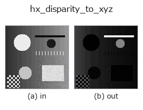

halcon_ext op• 데이터 종류: image → image
• 호출: fullseye.apply(img, "hx_disparity_to_xyz", a=0.5, b=0.5)(2-D 는 이미지 1 장 + 스칼라 노브 2 개 a,b∈[0,1] 모델)
• HALCON 대응: disparity_image_to_xyz(의미·매개변수는 HALCON 레퍼런스가 참고가 됩니다)

*그림은 128×128 합성 입력에서 실제로 실행한 출력. 왼쪽이 입력, 오른쪽이 출력. 점군은 위에서 본 산점도(밝기 = z), 1-D 열은 꺾은선, 볼륨은 z 방향 최대값 투영, 동영상은 가운데 프레임, 복소 영상은 진폭이며, 그림이 되지 않는 반환값은 값 자체를 표시한다.*
*출력은 viridis 풍의 의사 컬러(짙은 보라 = 작음, 노랑 = 큼)로 표시한다. 거리·위상·방향·깊이 같은 「양의 장」을 읽기 위해.*
노브 a 를 훑기(0.1 / 0.5 / 0.9, 다른 노브는 기본값):
▸ hx_disparity_to_xyz: 노브 a 스윕 (문서 사이트)
노브 b 를 훑기(0.1 / 0.5 / 0.9, 다른 노브는 기본값):
▸ hx_disparity_to_xyz: 노브 b 스윕 (문서 사이트)
다른 영상에서도(합성 장면 / 사진 / 동전. 윗줄이 입력, 아랫줄이 그 출력. 노브는 기본값):
▸ hx_disparity_to_xyz: 다른 입력 이미지 (문서 사이트)
*4열은 컬러 (H,W,3) 입력. 이 op는 채널을 넘나들지 않고 컬러를 다룰 수 있다(색 채널을 세 번째 공간축으로 컨볼루션하지 않음).*
시차 이미지로부터 깊이 Z = f*baseline/disparity 를 계산(초점/기선은 a,b 로 가변). 정규화 Z.
v(0~1)를 시차 disp = v*63 + 0.5 화소 상당으로 사상하고, Z = f * baseline / disp를 계산해 min-max로 [0,1]로 정규화한 영상을 반환한다. X, Y는 계산하지 않는다(Z만).
• a → 초점 거리 f = 200 + 600*a.
• b → 기선 길이 baseline = 0.05 + 0.15*b.
• 시차의 하한을 0.5로 두었으므로 0으로 나누기는 일어나지 않는다.
주의: f * baseline은 모든 화소에 공통인 상수배이고 마지막 min-max 정규화에서 상쇄되므로, a, b를 바꿔도출력은 바뀌지 않는다(실측으로 완전 일치). 출력은 실질적으로 "시차의 역수를 정규화한 것"으로, 시차 최대(v = 1)가 0, 시차 최소(v = 0)가 1이 된다(가까운 물체일수록 어둡다). 절대적인 깊이가 필요한 용도에는 쓸 수 없다. 역수 변환으로 먼 곳의양자화가 거칠어지므로 v가 작은 영역의 값은 불안정하다.
노브(실측): a를 0에서 1까지 변화시켜도 출력이 바뀌지 않는다(5가지 입력으로 실측).
아무것도 찍히지 않은 프레임(실측): 밝기가 균일한 이미지를 넣으면 밝기와 무관하게 결과가 비어 있다(모든 화소가 배경 0). 순백이든 순흑이든 같으며, 밝기 자체로는 아무것도 검출하지 않는다.
• gallery2d_halcon_ext 패밀리 가이드
• 샘플 데이터 카탈로그(DL URL / 라이선스) —— 2-D 는 skimage.data(BSD/public)+ 합성, 3-D 는 실데이터 소스(Stanford/PDS 등)의 DL URL.
• 연산자의 내력·참고문헌 —— 이 연산자 족의 바탕이 된 연구/기법의 출처.
• 알고리즘의 정전(저자·연도)과 용도는 위의 패밀리 사용 가이드에 적혀 있습니다.
아래 프로그램은 실제로 실행됨을 확인했습니다(그림과 같은 입력). Studio 도움말에서는 이 블록이 버튼이 되어 즉시 불러와 실행할 수 있습니다.
hx_disparity_to_xyz 0.50 0.50
• gallery2d_halcon_ext — py -3.11 examples/gallery2d_halcon_ext.py
image 를 입력으로 받는 것)identity · gaussian · mean_box · bilateral · unsharp · median · min_filter · max_filter
halcon_ext)hx_gen_circle · hx_gen_ellipse · hx_gen_rectangle2 · hx_gen_checker_region · hx_gen_grid_region · hx_gabor · hx_fit_surface1 · hx_fit_surface2
*Provenance: ops.py — 2D 연산자 레지스트리. 이 op 노트는 tools/opdocs.py md 가 자동 생성합니다(직접 편집하지 마세요).*
© 2026 Kazufumi Furuse — Fullseye operator documentation. Licensed under Apache-2.0.